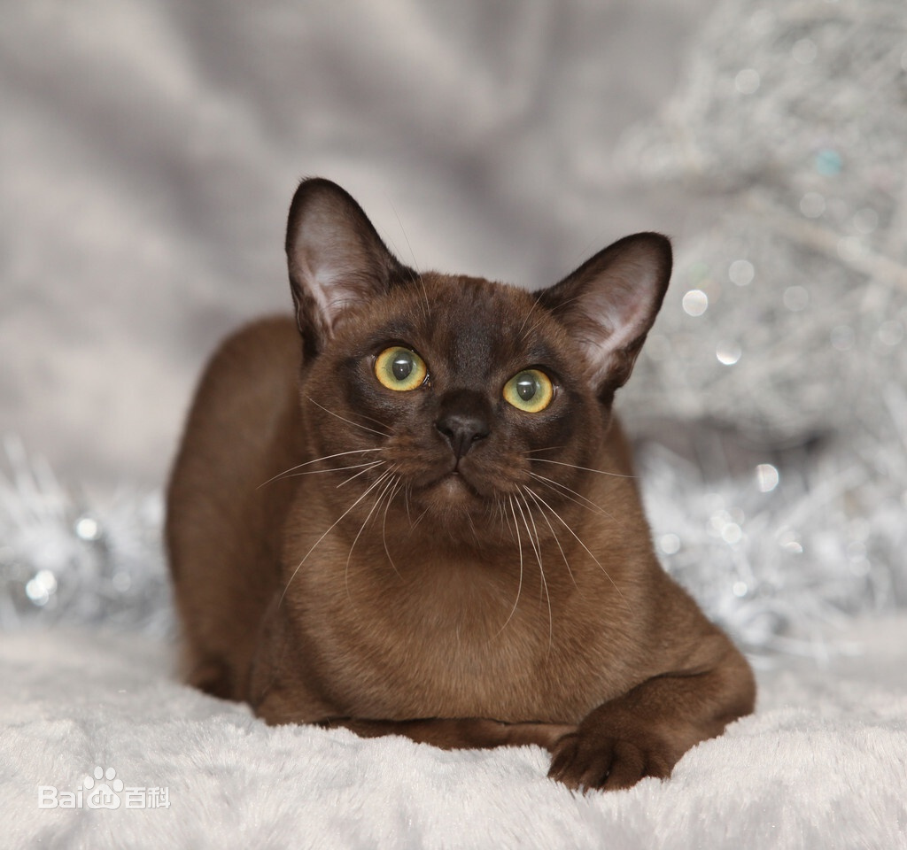

| 缅甸猫 |
原产地：缅甸，在三十年代的初期，美国旧金山的Dr. Joseph Thomson从缅甸获得一头吸引人的合桃啡色的雌猫，他为它起名“王猫”（Wong Mau），当时因为没有弄到同品种的公猫，只好让它和暹罗猫交配。经过与暹罗猫的繁殖后便订立了这个与别不同的品种——缅甸猫。在繁殖的过程中会得到一些毛色较淡的小猫，而美国的繁殖者要求美国CFA同样确认这些淡化的颜色，最初这些淡化颜色的猫被列为另一个品种Malayan，后期则变成缅甸猫中的DiluteDivision。【外貌特征】缅甸猫体形丰满，肌肉结实；四肢细长，前肢比后肢短；脚爪小，为椭圆形；尾巴长度适中。头部呈适中的楔子形，颧骨高，鼻子略短。眼睛上眼眶向上吊，下眼眶为圆形，眼珠为黄色；耳朵大小适中，尖稍呈椭圆形；被毛短而稠密，圆润富于光泽，如缎子一般光滑，受人珍视。【体形】中等身形，肌肉发达，身体健硕。肌肉发达，四肢细长，脚爪小。【头部】不论从正面或侧面观看，头儿也是圆圆的，面部既短且宽，发育甚佳。下巴结实浑圆，以反映出良好的咬合状态。【耳朵】细耳，且基本上是短耳，根部宽阔，连接头部的位置较阔，耳尖浑圆，位置稍偏下向。【眼睛】又大又圆，间距较宽。【鼻子】明显的凹位。【足掌】呈圆形，前肢各有五趾，后肢各有四趾。【尾巴】修直，属中等长度。【披毛】短密，具有丝绸般的光泽。【毛色】1.黑貂色（Sable）2.香槟色（Champagne）3.蓝色（blue）4.白金色（Platinum）【习性】缅甸猫不像暹罗猫叫声吵闹，它性格温和，顽皮活泼，叫声和动作都很可爱。喜欢与人作伴，不惧怕陌生人。 |
 |